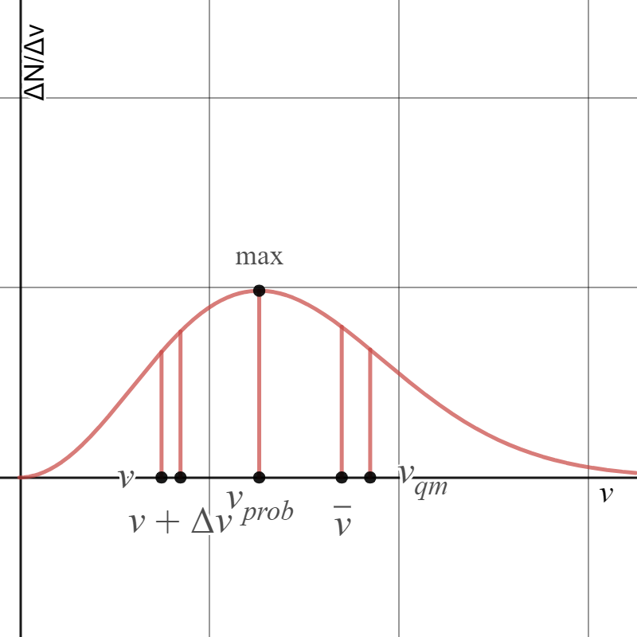

La teoria cinetica dei gas
Analisi dei gas dal punto di vista microscopico
Ipotesi
- Il numero di molecole di gas è molto elevato
- Le molecole sono approssimate a sfere perfette, rigide e identiche tra di loro
- La densità del gas è costante
- Le sfere sono molto piccole, al fine di trascurare gli effetti della rotazione e degli urti
reciproci
- Le forze intermolecolari sono trascurabili. In assenza di forze, ciascuna particella si muove di
moto rettilineo uniforme
- Ogni direzione è equiprobabile, e la velocità di ciascuna particella può assumere tutti i valori da
0 alla velocità della luce
- Le pareti del contenitore sono perfettamente lisce, e gli urti delle particelle contro di esse sono
perfettamente elastici
Tutte le ipotesi sono rispettate dalla simulazione che vedete a destra.
Forza di un urto contro una parete
Operiamo su un volumetto di gas ΔV = d³
Analizziamo un urto di una particella contro una parete, limitandoci al caso unidimensionale
Dal teorema dell'impulso abbiamo:
\begin{equation}
I_x = F'_x·\Delta t = \Delta q_x
\end{equation}
Calcoliamo quindi la quantità di moto
\begin{equation}
\Delta q_x = q_f - q_i = -mv_x - (+mv_x) = -2mv_x
\end{equation}
Dalle due equazioni otteniamo:
\begin{equation}
F'_x = \frac{\Delta q_x}{\Delta t} = -\frac{2mv_x}{\Delta t}
\end{equation}
che è la forza della parete su una data particella. Cambiando il segno, otteniamo la forza della particella
sulla parete:
\begin{equation}
F_x = \frac{2mv_x}{\Delta t}
\end{equation}
Δt non è che l'intervallo di tempo tra due urti consecutivi, ossia:
\begin{equation}
\Delta t = \frac{s}{v_x} = \frac{2d}{v_x}
\end{equation}
dove d è la distanza tra una parete e l'altra. L'equazione per la forza ricavata diventa quindi:
\begin{equation}
F_x = \frac{2mv_x}{\Delta t} = \frac{2mv_x}{\frac{2d}{v_x}} = \frac{mv^2_x}{d}
\end{equation}
Volendo ricavare la forza esercitata da tutte le particelle all'interno del volumetto, basta moltiplicare la
forza per il numero di particelle ΔN
\begin{equation}
F_{x,tot} = \Delta N·F_x = \Delta N\frac{mv^2_x}{d}
\end{equation}
Fx =
Fx,tot =
Generalizzazione
Le equazioni precedenti non tengono in considerazione due cose:
Le molecole non hanno la stessa velocità
Per ovviare a questo problema, useremo nelle formule il valore medio del quadrato della velocità
\begin{equation}
v^2_x \rightarrow \bar{v^2_x}
\end{equation}
\begin{equation}
\bar{v^2_x} = \frac{\sum_i v^2_{ix}}{\Delta N} = \frac{v^2_{1x}+v^2_{2x}···v^2_{\Delta N x}}{\Delta N}
\end{equation}
La formula per la forza di un urto diventa quindi:
\begin{equation}
F_{x,tot} = \Delta N·F_x = \Delta N\frac{mv^2_x}{d} = \Delta N\frac{m\bar{v^2_x}}{d}
\end{equation}
Gli urti non sono unidimensionali
Dal momento che abbiamo a che fare con 3 dimensioni, sappiamo che il vettore velocità è:
\begin{equation}
\vec{v} = \vec{v_x} + \vec{v_y} + \vec{v_z} \Rightarrow v^2 = v^2_x + v^2_y + v^2_z
\end{equation}
La definizione rimane la stessa anche utilizzando la media:
\begin{equation}
\bar{v^2} = \bar{v^2_x} + \bar{v^2_y} + \bar{v^2_z}
\end{equation}
Dal momento che tutte le direzioni sono equiprobabili, possiamo scrivere:
\begin{equation}
\bar{v^2_x} = \bar{v^2_y} = \bar{v^2_z} \Rightarrow \bar{v^2} = 3\bar{v^2_x} \Rightarrow \bar{v^2_x} =
\frac{\bar{v^2}}{3}
\end{equation}
La formula per calcolare la forza totale può essere scritta come:
\begin{equation}
F_{tot} = \frac{\Delta N}{3}\frac{m\bar{v^2}}{d}
\end{equation}
v2m =
Ftot =
La pressione del gas
Dalle equazioni precedenti, possiamo finalmente trovare la pressione del gas:
\begin{cases}
F_{tot} = \frac{\Delta N}{3}\frac{m\bar{v^2}}{d} \\ S = d^2
\end{cases}
\begin{equation}
\Rightarrow p = F/S = \frac{\Delta N}{3}\frac{m\bar{v^2}}{d}·\frac{1}{d^2}
\end{equation}
\begin{equation}
\Rightarrow p = \frac{\Delta N}{3}\frac{m\bar{v^2}}{d^3} = \frac{1}{3}\frac{\Delta N}{V}m\bar{v^2}
\end{equation}
E dal momento che:
\begin{equation}
\bar{E_C} = \frac{1}{2}m\bar{v^2}
\end{equation}
La pressione può essere riscritta come:
\begin{equation}
p = \frac{2}{3}\frac{N}{V}\bar{E_C}
\end{equation}
ECm =
p =
Relazione tra temperatura ed energia cinetica
Partiamo dall'equazione ricavata precedentemente e dall'equazione di stato dei gas perfetti:
\begin{cases}
pV = Nk_BT \\ p = \frac{2}{3}\frac{N}{V}\bar{E_C}
\end{cases}
\begin{equation}
Nk_BT = \frac{2}{3}\frac{N}{V}\bar{E_C} \Rightarrow \frac{2}{3}\bar{E_C} = k_BT
\end{equation}
La temperatura assoluta del gas è quindi:
\begin{equation}
T = \frac{2}{3k_B}\bar{E_C}
\end{equation}
L'energia cinetica media per singola particella è invece:
\begin{equation}
\bar{E_C} = \frac{3}{2}k_BT
\end{equation}
Considerando l'intero sistema, l'equazione diventa
\begin{equation}
\bar{E_C} = \frac{3}{2}Nk_BT = \frac{3}{2}nRT
\end{equation}
T =
ECm,tot =
La velocità quadratica media
La velocità quadratica media è definita come
\begin{equation}
v_{qm} = \sqrt{\bar{v^2}}
\end{equation}
Possiamo sostituire questa definizione nella formula per l'energia cinetica
\begin{equation}
\bar{E_C} = \frac{1}{2}m\bar{v^2} = \frac{1}{2}mv^2_{qm}
\end{equation}
In questo modo possiamo trovare un'altra formula per la velocità quadratica media
\begin{cases}
\bar{E_C} = \frac{1}{2}mv^2_{qm} \\ \bar{E_C} = \frac{3}{2}k_BT
\end{cases}
\begin{equation}
v_{qm} = \sqrt{\frac{3k_BT}{m}} = \sqrt{\frac{3RT}{M}}
\end{equation}
vqm =
La distribuzione maxwelliana delle velocità
Basandosi sulle ipotesi della teoria cinetica dei gas, i fisici Maxwell e Boltzmann riuscirono per primi a
calcolare la distribuzione delle velocità
Se si indica con ΔN
v il numero di particelle con una velocità compresa tra i valori v e
v+Δv, il rapporto ΔN
v /Δv rappresenta il numero di particelle per intervallo
unitario di velocità
La funzione di "Distribuzione maxwelliana delle velocità" è piuttosto complessa:
\begin{equation}
\frac{\Delta N_v}{\Delta v} =
\frac{4N}{\sqrt{\pi}}\left(\frac{m}{2k_BT}\right)^\frac{3}{2}v^2e^{-\frac{mv^2}{2k_BT}}
\end{equation}
Essendo di tale difficoltà, la dimostrazione non è inclusa in questa pagina, ma potete trovarla
qui.
In questa equazione sono presenti molte variabili:
N - numero di particelle in una storia
m - massa della particella
T - temperatura all'equilibrio
e - numero di Eulero (e ≈ 2.71828...)
k
B - costante di Boltzmann
Ecco come si presenta il grafico della distribuzione maxwelliana:

Come si può vedere, la velocità più probabile per una particella coincide con il massimo della funzione
sovracitata, e il valore medio della velocità è compreso tra la velocità quadratica media e la velocità più
probabile. Inoltre, all'aumentare della temperatura, la velocità più probabile diminuisce.
Le particelle che vedete muoversi nella simulazione possono presentare due distribuzioni: quella di Maxwell
e quella uniforme, tipica delle funzioni random() di qualsiasi linguaggio di programmazione
Il libero cammino medio
Finora abbiamo trascurato gli urti reciproci tra particelle. Il libero cammino medio indica la distanza che
una particella può percorrere senza incontrarne un'altra, urtandola.
Dal momento che le particelle sono tutte sfere identiche e distinguibili, la distanza tra i centri di due
particelle che urtano tra di loro sarà:
\begin{equation}
s = 2r
\end{equation}
Questa distanza definirà una sezione d'urto σ:
\begin{equation}
\sigma = \pi s^2 = \pi (2r)^2 = 4\pi r^2
\end{equation}
E infine, muovendosi la particella con velocità media v in un intervallo di tempo Δt, otterremo il
volume di un cilindro che indica la parte di spazio all'interno della quale una particella può urtare le
altre:
\begin{equation}
\Delta V = \sigma (\bar{v}\Delta t) = 4\pi r^2\bar{v}\Delta t
\end{equation}
Il numero di particelle all'interno di ΔV ci da un'idea del numero di urti avvenuti. Ponendo
n
V, ossia N/V, il numero di particelle per unità di volume, allora il numero di urti sarà:
\begin{equation}
n_V\Delta V = 4\pi r^2\bar{v}\Delta tn_V
\end{equation}
Se dividiamo lo spazio percorso dalla particella in esame per il numero di urti che avvengono con essa in
quello spazio, otteniamo il libero cammino medio, ossia la distanza media che la particella può percorrere
senza che un urto avvenga.
\begin{equation}
\bar{l} = \frac{\bar{v}\Delta t}{4n_V\pi r^2\bar{v}\Delta t} = \frac{1}{4\pi n_Vr^2}
\end{equation}
Il numero di collisioni al secondo può essere ottenuto dividento la velocità quadratica media per il libero
cammino medio:
\begin{equation}
C/s = \frac{v_{qm}}{\bar{l}}
\end{equation}
σ =
lcm =
C/s =
L'equipartizione dell'energia
Abbiamo già detto che l'energia cinetica totale del gas è espressa dalla formula:
\begin{equation}
\bar{E_C} = \frac{3}{2}k_BT
\end{equation}
Per via delle ipotesi, in particolare "Ogni direzione è equiprobabile", possiamo dire che:
\begin{equation}
\bar{v^2_x} = \frac{\bar{v^2}}{3} \Rightarrow \bar{v^2} = 3\bar{v^2_x}
\end{equation}
Quindi l'energia cinetica può essere espressa anche come:
\begin{equation}
\bar{E_C} = \frac{1}{2}m\bar{v^2} = \frac{3}{2}m\bar{v^2_x} = \frac{3}{2}k_BT
\end{equation}
Che, semplificando, diventa:
\begin{equation}
\frac{1}{2}m\bar{v_x^2} = \frac{1}{2}k_BT
\end{equation}
Possiamo fare lo stesso ragionamento con le altre direzioni; in questo modo, otteniamo che:
\begin{array}{rcl}
\frac{1}{2}m\bar{v_x^2} = \frac{1}{2}k_BT \\
\frac{1}{2}m\bar{v_y^2} = \frac{1}{2}k_BT \\
\frac{1}{2}m\bar{v_z^2} = \frac{1}{2}k_BT
\end{array}
In generale, ogni grado di libertà che aggiungiamo al sistema contribuisce all'energia cinetica di
quest'ultimo per un fattore di ½kBT
Se, quindi, lasciamo il sistema libero di ruotare, aggiungendo due gradi di libertà (ϑ e φ),
l'energia cinetica totale diventerà:
\begin{equation}
\bar{E_C} = \frac{5}{2}k_BT
\end{equation}